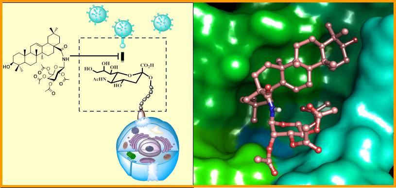

本课题组以流感病毒为研究对象，从自然界中广泛存在的五环三萜出发，通过活性追踪、先导化合物发现以及系统的构效关系的研究等，发现乙酰化半乳糖齐墩果酸具有强于达菲的抗流感活性。机制研究表明该类三萜衍生物作用于流感病毒血凝素蛋白的唾液酸受体结合口袋，抑制了病毒膜蛋白与宿主细胞受体的相互作用，从而抑制流感病毒对宿主细胞的附着能力，进而对H1N1、H3N2和达菲、金刚烷胺耐药珠甚至B型流感等病毒表现出广谱的抑制活性。更重要的是，此类先导物因阻断了流感病毒感染宿主细胞的必经通路，即使经多代传递仍没有表现出耐药现象，揭示出五环三萜调控流感病毒与宿主细胞的识别能力以及作为新型抗流感药物的广阔前景。相关成果已经申请国内外专利，部分结果发表药物化学领域的代表性杂志上（Yu MR, et al. J Med Chem 2014, DOI: 10.1021/jm5014067）。
此外，该课题组还以丙肝病毒为研究对象，以前期建立的荧光标记病毒感染宿主细胞的“可视化”模型为基础，从板蓝根、川续断等传统抗病毒中药中发现的三萜皂苷类化合物出发，发现了活性好、溶解度大、无溶血副作用及成药性强的刺囊酸三萜先导物。机制研究借助生物素标记的刺囊酸小分子探针、免疫共沉淀、SPR、蛋白质谱等现代分析手段，阐明该类先导物通过结合丙肝病毒的膜蛋白E2，抑制其与宿主CD81受体的相互作用，从而改变了丙肝病毒对宿主细胞的识别。相关成果也发表在药物化学领域的代表性杂志上（Yu F, et al. J Med Chem 2013, 56, 4300；Wang H, et al. Eur J Med Chem 2013, 64, 160）。
基于五环三萜调控蛋白和蛋白的相互作用的潜能，该课题组进一步优化三萜结构，从最初发现的先导物齐墩果酸（EC50 10 µM）、刺囊酸（EC50 1 µM）、刺囊酸二糖衍生物（EC50 0.3 µM），再到通过特殊连接臂构成的刺囊酸二聚体（EC50 3 nM），活性提高了数千倍，是目前报道的针对丙肝病毒进入宿主细胞过程的活性最强抑制剂。将五环三萜与β-环糊精偶联得到的共价物，其抗病毒活性也有较大的提高，相关结果也已发表 （Xiao SL, et al. ChemMedChem 2014, 9, 1060; Yu F, et al. Eur J Med Chem 2014, 77, 258）。另外，该课题组与叶敏教授课题组合作，发现甘草次酸类五环三萜衍生物同样具有较好抑制流感病毒进入细胞活性，研究结果发表在天然药物化学领域的代表性杂志上（Song W, et al. J Nat Prod 2014, 77, 1632）。
这些研究成果表明，自然界广泛存在的、具有调控多种病毒与宿主细胞识别的五环三萜有可能是自然界抗病毒进化选择的产物，反映了其天然的抵抗病毒进入细胞的生源功能，对它的深入研究将有助于开发作用机制独特的新型抗病毒药物。此外，鉴于流感病毒唾液酸受体结合口袋的肤浅结构特征，血凝素蛋白一直不被看好为药物靶点，而五环三萜的疏水特性以及偶联特定糖后带来的特殊氢键，有可能构成突破这一困境的重要分子，为抗病毒药物研发带来新的思路。该课题得到了科技部重大研究计划（973）、多项国家自然科学基金、澳门科学技术发展基金、北京大学九八五和北京大学-清华大学生命联合中心的支持。
